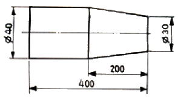
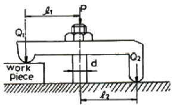
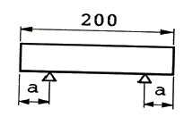
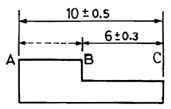

치공구설계산업기사 (2008-07-27 기출문제)
1과목: 정밀가공학
1. 절삭가공에 있어서 구리가 알루미늄 등 연성재료를 절삭깊이가 작고 고속으로 절삭할 때에 잘 나올 수 있는 것으로 가장 이상적인 칩의 형태는?
- 열단형
- 경작형
- 유동형
- 전단형
(정답률: 알수없음)

2. 피삭재를 절삭할 때 바이트 날 끝의 고온, 고압 때문에 칩이 융착되어 공구 날 끝 첨단에 붙어 있게 되는 구성인선(built-up edge)의 생성에서 소멸과정을 올바르게 나열된 것은?
- 발생→분열→성장→탈락
- 발생→탈락→성장→분열
- 발생→성장→탈락→분열
- 발생→성장→분열→탈락
(정답률: 알수없음)
3. 절삭가공시 절삭유의 사용 목적으로 틀린 것은?
- 공구와 공작물의 냉각
- 공작물의 표면 세척작용
- 공구와 칩의 친화력 향상
- 절삭열에 의한 정밀도 저하를 방지
(정답률: 알수없음)
4. 구성인선(built-up edge)의 발생을 억제시키는 방법으로 거리가 먼 것은?
- 절삭속도를 크게 한다.
- 경사각을 크게 한다.
- 공구의 인선을 예리하게 한다.
- 절삭깊이를 크게 한다.
(정답률: 알수없음)
5. 다음 중 테일러의 공구 수명식으로 맞는 것은? (단, 절삭속도 : V(m/min), T : 공구 수명(min), n : 공작물과 공구의 재질에 따른 지수, C : 가공물의 절삭 조건에 따라 변화하는 상수)
- VTn = C
- (VT)n = C
- VT = C
- VT = Cn
(정답률: 알수없음)
6. 지름 50mm인 연강 둥분봉을 20m/min의 절삭 속도로 선삭할 때 스핀들의 회전수는 약 몇 rpm 인가?
- 100
- 127
- 440
- 500
(정답률: 알수없음)
7. 선반에서 테이퍼 절삭 방법이 아닌 것은?
- 심압대를 편위시키는 방법
- 테이퍼를 절삭장치를 이용하는 방법
- 백기어를 사용하는 방법
- 복식 공구대를 경사시키는 방법
(정답률: 알수없음)
8. 지름 50mm인 원통봉에서 길이방향 30cm를 지름 47mm로 선반가공할 때, 소요시간을 계산하면 약 몇 분(min)인가? (단, 회전수 450rpm, 절삭깊이 0.5mm, 1회전 당 이송량 0.2mm/rev로 하고, 준비 및 여유시간은 무시한 순 절삭 시간만을 계산한다.)
- 2.4
- 5.0
- 10.0
- 23.4
(정답률: 알수없음)
9. 선반에서 테이터를 심압대를 편위 시켜 그림과 같은 제품을 가공하려면 심압대의 편위량은?

- 5mm
- 10mm
- 15mm
- 20mm
(정답률: 알수없음)
10. 선반작업에서 칩이 바이트의 경사면을 미끄러지면서 마찰에 의하여 공구의 윗면이 오목하게 파여지는 현상을 무엇이라 하는가?
- 프랭크(frank) 마모
- 칩핑(chipping)
- 크레이터 마모(crater wear)
- 빌트업 에지(build-up edge)
(정답률: 알수없음)
11. 절삭 유제가 갖추어야 할 구비조건이 아닌 것은?
- 냉각성이 충분할 것
- 윤활성이 좋을 것
- 방청성이 좋을 것
- 인화점, 발화점이 낮을 것
(정답률: 알수없음)
12. 비교적 작은 압력으로 특수 숫돌이 가공물의 표면을 가압하고 숫돌을 진동시키면서 가공물에 회전 이송운동을 주어 가공물의 표면을 정밀 가공하는 방법은?
- 드릴가공
- 선반가공
- 밀링가공
- 수퍼피니싱
(정답률: 알수없음)
13. 다음 중 회전공구에 의한 절삭 가공이 아닌 것은?
- 밀링
- 드릴링
- 호빙
- 브로칭
(정답률: 알수없음)
14. 다음의 부속장치 중 밀링 장치에서 사용하지 않은 것은?
- 회전테이블(circular table)
- 방진구(work rest)
- 분할대(indexing head)
- 슬로팅 장치(slotting attachment)
(정답률: 알수없음)
15. 밀링머신에서 니(knee)가 Z축으로 상하 운동을 할 수 있도록 레일 역할을 하는 부분은?
- 새들(saddle)
- 베드(bed)
- 칼럼(column)
- 베이스(base)
(정답률: 알수없음)
16. 밀링머시에서 브라운 샤프형 분할대의 인덱스 크랭크를 1회전 시키면 주축을 몇 회전하는가?
- 40회전
- 1/40회전
- 24회전
- 1/24회전
(정답률: 알수없음)
17. 밀링 커터 날 수가 12, 지름은 100mm, 날 1개의 이송량은 0.3mm, 절삭속도를 100 m/min로 연강을 절삭할 때 테이블의 이송 속도(m/min)는?
- 0.95
- 1.21
- 1.15
- 1.09
(정답률: 알수없음)
18. 일반적인 표준 드릴의 날끝각(point angle)은?
- 135°
- 125°
- 118°
- 108°
(정답률: 알수없음)
19. 다음 가공방법 중 접시 머리 나사의 머리 부분이 들어 갈 부분을 원추형으로 가공하는 것은?
- 리밍
- 스폿 페이싱
- 카운터 싱킹
- 태핑
(정답률: 알수없음)
20. 표면이 매끈한 강구 몽야의 공구를 일감 구멍에 압입하여 통과시켜서 가공물의 표면을 매끈하게 다듬는 가공법은?
- 버니싱
- 브로칭
- 액체 호닝
- 그릿 블라스트
(정답률: 알수없음)
2과목: 치공구설계
21. 링크 조종 중심 위치결정구(linkage controlled centralizer)의 설계 지침으로 잘못된 것은?
- 미끄럼보다는 회전식으로 할 것
- 미끄럼 부분은 힘의 작용점 밑에 지지구를 마련할 것
- 회전부분은 반경에 수직 방향으로 힘을 가할 것
- 접촉 부분에 백래쉬 상태는 무시해도 각부품의 강도를 고려할 것
(정답률: 알수없음)
22. 밀링 작업에서 정확한 절삭 깊이나 절삭 폭을 정하기 위해 고정구에 설치하는 장치는?
- 커터 세트 블록
- 블록 게이지
- 하이트 게이지
- 위치 결정핀
(정답률: 알수없음)
23. 치공구의 본체를 조립형으로 할 경우에 다웰 핀(dowel pin)을 사용하는 데 다웰 핀의 길이는 어느 정도로 해야 하는가?
- 직경과 같게 한다.
- 직경의 1.5~2배 정도로 한다.
- 직경의 2.5~3배 정도로 한다.
- 길이는 길수록 좋다.
(정답률: 알수없음)
24. 다음 그림에서 ℓ1 = 40mm, ℓ2 = 30mm, d = 12mm, P = 140kgf 일 때 공작물에 가해지는 힘 Q1은 얼마인가?

- 60 kgf
- 80 kgf
- 420 kgf
- 560 kgf
(정답률: 알수없음)
25. 피스톤의 면적이 78cm2이고 피스톤에 작용하는 압력이 20kgf/cm2일 때 유압 실린더에 의해 발생되는 힘은 얼마인가?
- 1750 kgf
- 1560 kgf
- 3.9 kgf
- 390 kgf
(정답률: 알수없음)
26. 보링 바의 강도와 강성은 바 지름 D와 길이 L에 따라 결정한다. 한쪽 지지형일 때 적절한 강성을 유지하기 위해 길이 L은 직경 D에 대비하여 얼마로 해야 하나?
- L ≦ 6×D
- L ≦ 8×D
- L ≦ 10×D
- L ≦ 12×D
(정답률: 알수없음)
27. 주철을 보링하는 경우 절입량(h)을 4mm, 이송량(f)을 0.2mm로 하고 바이트 돌출량(L)을 10mm로 하면 바이트 자루부의 크기(b)의 값은 얼마가 되겠는가? (단, 비절삭저항(K) = 190kgf/mm2 이고, 자루에 발생하는 응력(σ) = 6kgf/mm2로 함)
- 10.5mm
- 11.5mm
- 12.5mm
- 13.5mm
(정답률: 알수없음)
28. 치공구의 사용상 이점에서 제품의 생산원가 절감을 위한 목적으로 적합하지 않는 것은?
- 공정의 복합화
- 공정의 개선
- 제품의 호환성
- 제품의 균일화
(정답률: 알수없음)
29. 공작물의 기계적 관리시 고려해야 할 사항으로 틀린 것은?
- 공작물의 휨방지를 위해 되도록 위치결정구를 절삭력쪽에 두는 것이 기계적 관리뿐 아니라 형상 관리에도 유리하다.
- 고정력은 절삭력의 바로 맞은편에 오지 않도록 한다.
- 주조품 가공시 절삭력에 의한 휨 방지를 위해 조절식 지지구를 사용한다.
- 절삭력은 공작물이 위치 결정구에 고정되기 쉬운 방향으로 조정한다.
(정답률: 알수없음)
30. 대형공작물이나 불규칙한 형상의 공작물을 캐리어(carrier)상자에 넣어서 사용하는 지그는?
- 멀티스테이션 지그(multistation jig)
- 트라니언 지그(trunnion jig)
- 펌프 지그(pump jig)
- 분할 지그(indexing jig)
(정답률: 알수없음)
31. 클램핑 장치에 칩이 붙을 때는 클램핑력이 불안전하게 된다. 그 대책으로 잘못 설명된 것은?
- 위치결정면 부분을 넓은 면적으로 한다.
- 클램핑 면은 수직면으로 한다.
- 볼트 등을 이용하여 항상 밀착하게 한다.
- 칩의 비산 방향에 클램프를 설치하지 않는다.
(정답률: 알수없음)
32. 자동화 치공구에서 클램프를 직접적으로 출력하는 기구가 아닌 것은?
- 공압실린더
- 유압실린더
- 검출기
- 솔레노이드
(정답률: 알수없음)
33. 공작물의 위치 결정구 사용에 있어 충족되어야 하는 요구사항으로 틀린 것은?
- 마모에 견딜 수 있어야 한다.
- 청소가 용이하도록 설계되어야 한다.
- 가능한 1회 사용하고 재사용하지 않는다.
- 공작물과 접촉 부위가 쉽게 보일 수 있도록 설계되어야 한다.
(정답률: 알수없음)
34. 클램핑 할 때 일반적인 주의사항으로 적다앟지 않은 것은?
- 절삭력은 클램프가 위치한 방향으로 작용하지 않도록 한다.
- 클램핑 기구는 조작이 간단하고 급속 클램핑 형식을 취한다.
- 클램프는 공작물을 장·탈 할 때 간섭이 없도록 한다.
- 절삭면은 절삭시 안전을 위하여 고정력이 작용하는 위치로부터 되도록 멀리 클랭핑을 한다.
(정답률: 알수없음)
35. 공작물 관리의 목적에서 공작물의 변위가 발생하는 원인이 아닌 것은?
- 고정력
- 절삭력
- 작업자의 숙련도
- 기계의 강성
(정답률: 알수없음)
36. 드릴지그에서 일반적으로 간단하게 많이 사용되는 부시로 부시의 고정은 억지 끼워 맞춤으로 압입하여 사용되는 부시는?
- 고정부시
- 삽입부시
- 라이너부시
- 나사부시
(정답률: 알수없음)
37. 조립 지그 설계상의 고려사항이 아닌 것은?
- 조립 정밀도
- 위치결정의 적정여부
- 공작물의 장착과 착탈
- 가공할 부품의 수량
(정답률: 알수없음)
38. 연삭 고정구의 설계 및 제작시 일반적인 주의 사항이 아닌 것은?
- 클램핑은 확실하게 하여야 하며, 공작물은 가공 중에 위치가 변해야 한다.
- 클램핑력이나 절삭열에 의한 변형이 발생하지 않아야 한다.
- 측정은 공작물이 고정된 상태에서 하여야 한다.
- 절삭유의 공급과 배출이 잘 되도록 하여야 한다.
(정답률: 알수없음)
39. 용접 고정구 설계시 고려사항이 아닌 것은?
- 비용절약을 위해 어느 경우든 가용접 고정구는 생략한다.
- 클램핑 방법은 장착과 탈착이 용이한 구조로 한다.
- 용접 후 수축 및 변형을 미리 고려하여 설계한다.
- 공작물의 잔류응력과 균열을 고려하여 위치결정과 클램핑을 결정한다.
(정답률: 알수없음)
40. 보링바의 떨림 원인으로 거리가 먼 것은?
- 공작물의 형상이 약한 경우
- 바이트 돌출이 작은 경우
- 동력 전달부의 테이퍼가 맞지 않는 경우
- 절삭 깊이가 크거나 이송이 빠른 경우
(정답률: 알수없음)
3과목: 치공구재료 및 정밀계측
41. 다음 탄소강의 조직 중 경도가 가장 높은 조직은?
- 마텐자이트
- 페라이트
- 펄라이트
- 오스테나이트
(정답률: 알수없음)
42. 스프링강의 특성과 가장 관계가 적은 성질은?
- 내마모성이 크다.
- 피로 한도가 높다.
- 탄성 한도가 크다.
- 반복하중에 잘 견딜 수 있다.
(정답률: 알수없음)
43. 비커즈 경도계에서 피라밋 압입체의 대면각의 각도는?
- 136°
- 120°
- 118°
- 90°
(정답률: 알수없음)
44. 인바, 엘린바 등 측정용 재료에서 가장 중요시 해야 할 특성은?
- 경화능
- 불변형성
- 인성
- 내열성
(정답률: 알수없음)
45. 탄소 공구강에서 절삭 가공을 쉽게 하기 위해서 담금질 처리 전에 선행시켜야 하는 열처리는?
- 완전 풀림
- 가단화 풀림
- 구상화 풀림
- 응력제거 풀림
(정답률: 알수없음)
46. 다음 중 치공구 재료의 열처리에서의 질량효과와 관계가 가장 밀접한 것은?
- 시즈닝
- 충격강도
- 피로한도
- 경화능
(정답률: 알수없음)
47. 탄소강의 합금원소 중 담금질 효과를 증대시켜 경화능력을 커지게 하고 고온에서 결정립 성장을 억제시키기 위하여 첨가하는 원소는?
- 규소
- 니켈
- 망간
- 인
(정답률: 알수없음)
48. 재료의 검사방법 중 비파괴 검사에 속하지 않는 것은?
- X-선 시험
- 인장강도 시험
- 자분탐상 시험
- 형광침투 시험
(정답률: 알수없음)
49. 구리와 주석(Cu+Sn) 합금의 일반적인 명칭은?
- 실루민
- 인바
- 인코넬
- 청동
(정답률: 알수없음)
50. 황동의 종류에 속하지 않는 것은?
- 톰백(tombac)
- 포금(gun metal)
- 문쯔메탈(muntx metal)
- 델타메탈(delta metal)
(정답률: 알수없음)
51. N.P.L식 각도 게이지에 대한 설명 중 틀린 것은?
- 요한슨식보다 게이지 면이 크고 개수도 적다.
- 49개조와 85개조를 홀더로 조합하여 사용한다.
- 게이지 면은 게이지 블록과 마찬가지로 밀착이 가능하므로 홀더가 필요 없다.
- 각도의 가산(加算), 감산(減算)에 의해서 필요한 각도를 조합할 수 있다.
(정답률: 알수없음)
52. 현미 간섭식 표면 거칠기 측정법에 관한 설명 중 올바른 것은?
- 촉침식의 일종이다.
- 1μm 이하의 측정이 불가능하다.
- 소음, 진동이 심한 현장용으로 적합하다.
- 간섭무늬를 이용하며 광파간섭법을 응용한 것도 있다.
(정답률: 알수없음)
53. 그림과 같이 호칭치수 200mm의 게이지 블록을 사용하여 측정할 때, 오차가 가장 적은 지지점의 거리 a는 약 몇 mm 인가?

- 21.13
- 42.26
- 46.64
- 44.46
(정답률: 알수없음)
54. 측정기의 성능에 관한 설명 중 틀린 것은?
- 측정기의 정도(精度)란 측정시 생기는 여러 가지 오차를 종합한 것을 말한다.
- 측정기의 감도(感度)란 측정기의 응답이 빠른 것을 말한다.
- 측정기의 신뢰성은 측정기가 규정된 조건의 범위내에서 규정된 기능과 성능을 유지하는 시간적 안정성을 표시하는 성질 또는 정도를 말한다.
- 측정기는 때때로 교정(Calibration)을 하여 그 정도를 파악해야 한다.
(정답률: 알수없음)
55. 공기 마이크로미터의 장점에 대한 설명 중 틀린 것은?
- 측정력이 5~15g 정도이다.
- 배율이 1000배에서 40000배 정도까지로 높다.
- 한 개 측정물의 여러 곳을 한번에 측정할 수 있다.
- 비교측정이기 때문에 치수별 마스터는 1개면 된다.
(정답률: 알수없음)
56. 지름 42.000mm의 둥근 강재봉을 측정하였더니 42.022mm 였다. 오차백분율은?
- 0.⑤%
- 99.95%
- 5%
- 95%
(정답률: 알수없음)
57. 마이크로미터의 앤빌과 스핀들의 평행도 검사를 하고자 할 때 필요하지 않은 것은?
- 옵티컬 패러렐
- 게이지 블록
- 옵티컬 플랫
- 단색광원장치
(정답률: 알수없음)
58. 이미 치수를 알고 있는 기준편과의 차를 이용하여 측정값을 구하는 측정방법은?
- 비교측정
- 직접측정
- 절대측정
- 간접측정
(정답률: 알수없음)
59. 오토콜리메이터로 측정할 수 없는 항목은?
- 동심도 측정
- 육면체의 직각도 측정
- 안내면의 진직도 측정
- 길이의 미소변화량 측정
(정답률: 알수없음)
60. 삼칩법에 의한 미터나사의 유효지름(ED)을 구하는 공식은? (단, dw= 삼침의 지름, P = 나사의 피치, M = 숫나사에 삼침을 넣고 측정한 외측거리)
- ED = M – 3dw + 0.866025 × P
- ED = M – 3dw + 0.960491 × P
- ED = M + 3dw - 0.866025 × P
- ED = M + 3dw - 0.960491 × P
(정답률: 알수없음)
4과목: 기계공정설계
61. 금속가공분야에서 일반적으로 공정을 5가지로 분류한다. 이 5가지 공정에 해당되지 않는 것은?
- 지원공정(supporting process operation)
- 중요공정(major process operation)
- 특수공정(special process operation)
- 기본공정(basic process operation)
(정답률: 알수없음)
62. 공작물 위치 결정방법에서 기계적 관리에 필요한 조건의 설명으로 틀린 것은?
- 공작물에 공구력에 의한 휨이 생기지 않게 한다.
- 공작물에 고정력에 의한 휨이 생기지 않게 한다.
- 공작물에 자중에 의한 휨이 생기지 않게 한다.
- 공작물에 고정력이 작용할 때 모든 위치 결정구와 접촉하지 않게 한다.
(정답률: 알수없음)
63. 다음 중 지원공정에 해당되지 않는 것은?
- 출고 및 수령
- 검사 및 품질관리
- 포장 및 운반
- 도금 및 착색
(정답률: 알수없음)
64. 기계공정설계에 대한 설명 중 틀린 것은?
- 부품도를 변경시킬 수 있는 것은 원칙직적으로 설계자 뿐이다.
- 생산원가를 줄이기 위하여 설계자와 제조자는 상호협력한다.
- 보조공정의 선택은 부품설계자에 의해서 결정한다.
- 기본공정은 공정설계 기사가 제품의 형상을 보고 결정한다.
(정답률: 알수없음)
65. 제조공정의 선택 및 계획에 대한 절차에서 제일 먼저 해야 하는 것은?
- 문제에 대한 정보수집
- 공정의 목표설정
- 대안공정 계획
- 조치과정진행
(정답률: 알수없음)
66. 다음 중 공차누적을 방지하는 방법으로서 적절하지 못한 것은?
- 기준선 치수방식에 의한 관계치수 표기
- 공정순서의 적절한 선정
- 공정에 따른 공차도표(Tolerance Chart)작성 및 검토
- 제품공차의 확대
(정답률: 알수없음)
67. 범용공작기계가 전용공작기계에 대하여 갖는 장점이 아닌 것은?
- 대량생산에 적합하다.
- 융통성이 많다.
- 유지보수비가 적게 든다.
- 장비의 초기 투자가 적다.
(정답률: 알수없음)
68. 공정설계시 장비를 선택할 때 설계요소 측면에서 고려해야 할 사항으로 거리가 먼 것은?
- 정밀도
- 생산성
- 윤활방법
- 외관
(정답률: 알수없음)
69. 다음 그림과 같이 치수가 표기되었을 경우에 얻어질 수 있는 AB의 한계치수는?

- 3.8 ~ 4.2
- 3.7 ~ 4.3
- 3.5 ~ 4.5
- 3.2 ~ 4.8
(정답률: 알수없음)
70. 공작물 관리 중에서 치수관리에 대한 설명과 가장 거리가 먼 것은?
- 공작물의 가공시 공차누적이 생기지 않도록 하기 위한 것이다.
- 공작물이 불규칙하더라도 규정된 공차내로 가공하기 위한 것이다.
- 적절한 공작물의 표면을 위치결정면으로 선택한다.
- 기하하적 관리를 한 다음에 치수관리를 한다.
(정답률: 알수없음)
71. 유사한 작업끼리 서로 묶어서 수행하는 작업결합의 장점이 아닌 것은?
- 불량률의 감소
- 필요한 툴링의 감소
- 공정 중 재고감소
- 작업속도 조절이 용이
(정답률: 알수없음)
72. 제품설계자의 역할을 설명한 것이다. 이 중 잘못된 것은?
- 제품규격 및 사용설정서 작성
- 조립도 및 부품도의 작성
- 제품생산에 필요한 장비의 검토 및 주문
- 조립 및 수리가 용이한 설계
(정답률: 알수없음)
73. 공정 설계시 고려하여야 할 여러 공작물에서 나타나는 불규칙 형상 중 플라스틱 몰딩에 나타나는 것과 거리가 먼 것은?
- 게이트(Gate)
- 플래시(Flash)
- 이젝터 핀(Ejector pin) 자국
- 캠버(Camber)
(정답률: 알수없음)
74. 공차도표에 작성되는 가공 치수의 정의로 가장 적합한 것은?
- 위치결정 표면과 공정이 수행되는 표면 사이 거리
- 가공면 치수와 가공 후 남아있는 치수
- 두 치수 사이의 차이
- 한 개 또는 두 개의 균형치수
(정답률: 알수없음)
75. 공정 계획에 있어서 공작물 관리의 주요 3가지 기법으로 거리가 먼 것은?
- 기하학적 관리
- 치수 관리
- 표면 관리
- 기계적 관리
(정답률: 알수없음)
76. 일반 제조공정을 절삭, 성형, 조립공정으로 분류할 때, 절삭공정이 아닌 것은?
- 스웨이징(swaging)
- 드릴링(drilling)
- 밀링(milling)
- 선삭(thrning)
(정답률: 알수없음)
77. 제조공정 중에서 다듬질(finishing)으로 옳은 것은?
- 용접(welding)
- 도장(painting)
- 압입끼워맞춤(press fitting)
- 호닝(honing)
(정답률: 알수없음)
78. 가공품 치수 20±0.025의 공차(tolerance)는?
- 0.025
- 0.⑤
- 19.95
- 20.025
(정답률: 알수없음)
79. 직육면체에서 가장 양호한 기하학적 관리를 얻기 위한 위치결정구의 배치로 맞는 것은?
- 가장 넓은 면에 3개의 위치결정구를 둔다.
- 두 번째 넓은 면에 4개의 위치결정구를 둔다.
- 가장 좁은 면에 2개의 위치결정구를 둔다.
- 모든 면에 3개의 위치결정구를 둔다.
(정답률: 알수없음)
80. 공정전개 순서상에 대한 제한사항은 고정 그 자체에서 발생되는데, 다음 중 제한사항으로 거리가 먼 것은?
- 기계의 융통성
- 공정능력
- 기계의 설계능력
- 생산량
(정답률: 알수없음)
유동형 칩은 길이와 두께가 비슷하며, 곡률이 크지 않은 형태를 말합니다. 이러한 칩은 절삭력이 작아도 칩이 잘 나오며, 칩의 열전도도가 높아 열이 잘 전달되어 칩의 변형이나 파손을 방지할 수 있습니다. 또한, 유동형 칩은 칩배출이 용이하고, 절삭면의 표면조도도 좋아져 가공품질이 향상됩니다.
따라서, 구리와 같은 연성재료를 절삭할 때에는 유동형 칩이 가장 이상적인 형태입니다.